World of ClaudeCraft · The Farshore · Riftspawn, round two
The mob is locked: the Riftspawn. First quest on the island, Q0 "Ashore": report
to Sergeant Marsh at the Watch Meadow, then kill twelve of these on the militia line.
First enemy anyone fights in the campaign. Level 3 to 4, entity colour violet
0x7a3fb0, a little under two yards tall.
The brief for this round: horns, saturated purple, extra limbs. No architecture, no hoods, no cloaks, nothing tailored. Bare bodies, so the horns and the limbs carry the silhouette.
Two things I fixed from the first round, both my errors. I had asked for "dark desaturated violet-grey" and got five nearly black bodies; this round asks for saturated purple with deep purple shadows instead of black, which is why these actually read as purple. And the word "drape" reliably produced clothing, so this round says bare, twice. The architecture in round one came out of a design doc in the repo, not from the brief, and it is gone.
On extra limbs being expensive: mostly they are not. Extra arms only cost real money if they need to move independently. A second pair bound rigidly to the chest bone, folded or clasped, rides the torso through every animation for free: no new bones, no per-clip posing, all 22 KayKit clips work untouched. That is exactly the pose the strongest candidate below already has. Only free-swinging extra arms need paying for.
All three likes, at once
4,073 tris · 1 material
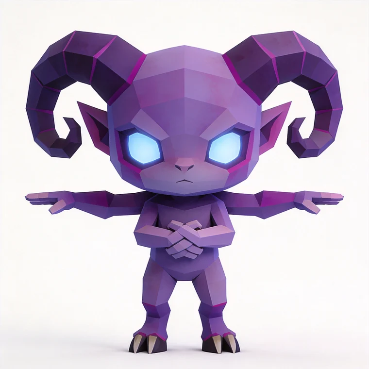
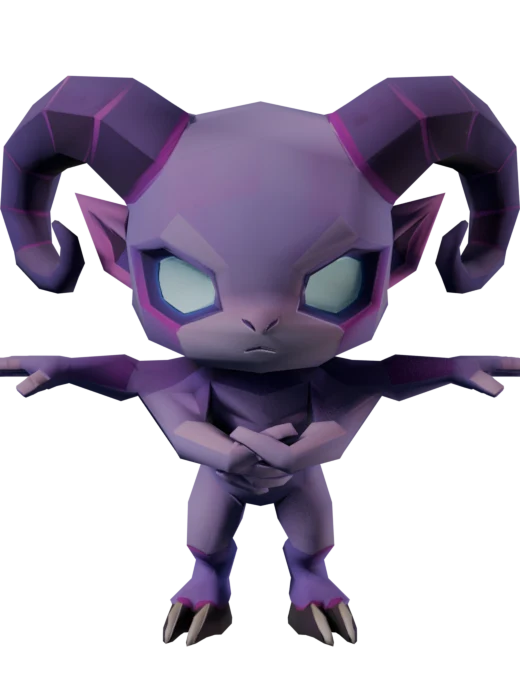
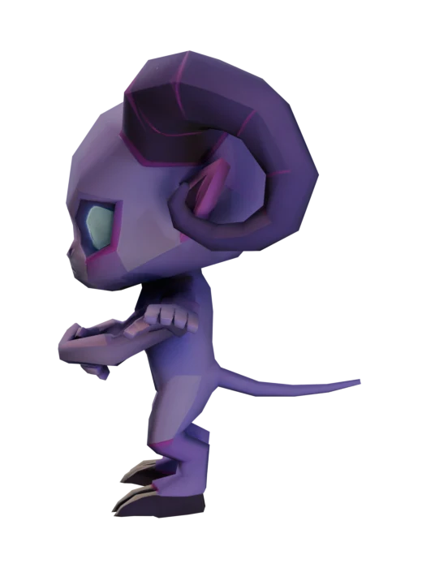
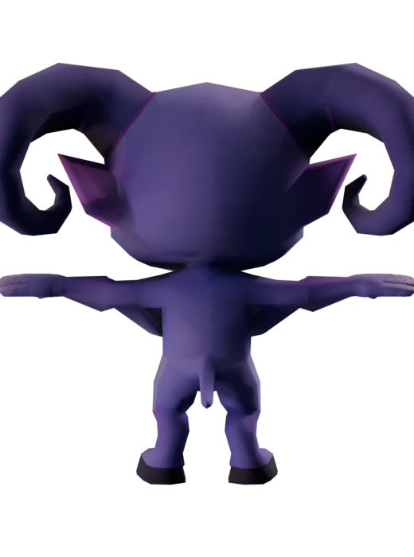
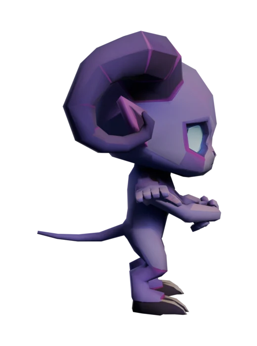
Big curling ram horns with magenta along the ridges, huge cold glowing eyes, and the second pair of arms clasped tight against its chest, which is precisely the free-to-animate configuration. Digitigrade legs ending in black claws. Of everything generated across both rounds this is the one that could stand next to the KayKit cast today with no adjustment: the proportions, the flat colour blocks and the chunky facets are all native. It is also the cheapest to finish.
It is cute. Big eyes on a small body reads as adorable more than nightmarish, and this thing is supposed to be what a rift vomits onto a besieged island. Whether that matters is a taste call and yours to make: plenty of classic MMOs make their level 3 trash appealing on purpose. If you want it meaner, the fix is small and local: shrink the eyes, drop the brow, and lengthen the jaw.
No mouth
3,961 tris · 1 material
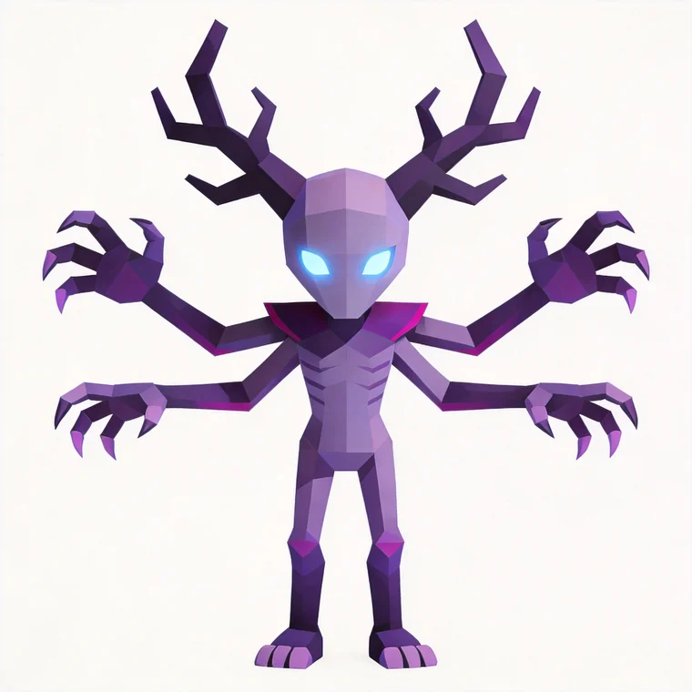
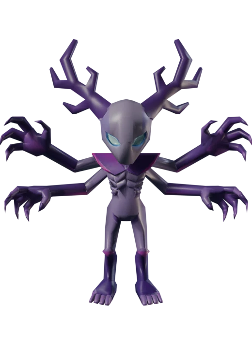
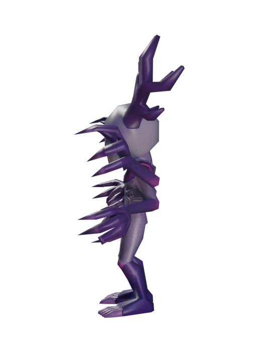
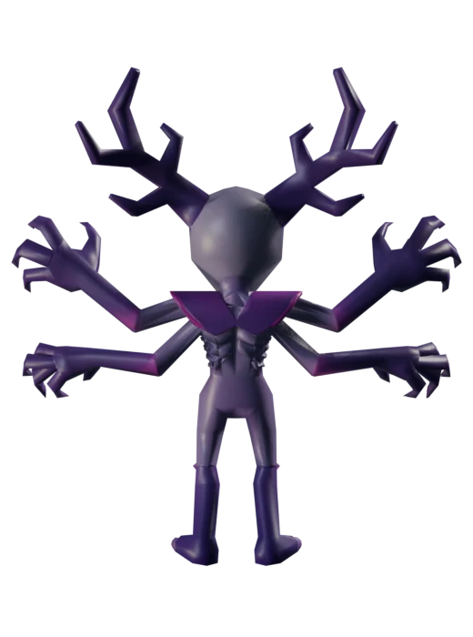
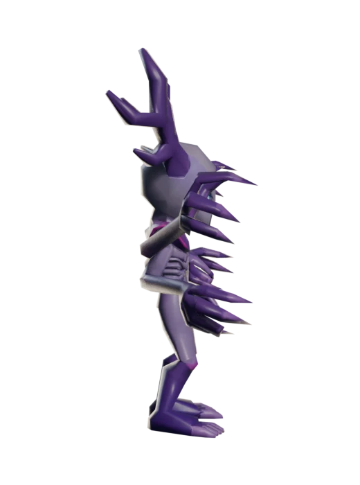
The eeriest thing either round produced, and the reason is one detail: it has no mouth. A narrow blank face, two cold eyes, and nothing else. It does not eat and it does not speak, which is a far stranger idea than a set of teeth. The antlers branch wider than its own body, so its silhouette is the most distinctive here, and four long thin arms with oversized clawed hands finish it.
The thin limbs and narrow torso are the least chibi proportions of the batch, so it sits slightly outside the KayKit family; it would want thickening. The antlers are wide enough to clip through doorways and tight terrain, which is a real problem for a mob that spawns in numbers. And its arms are held out rather than folded, so if all four need to swing it costs animation work the imp does not.
Not a person at all
3,941 tris · 1 material
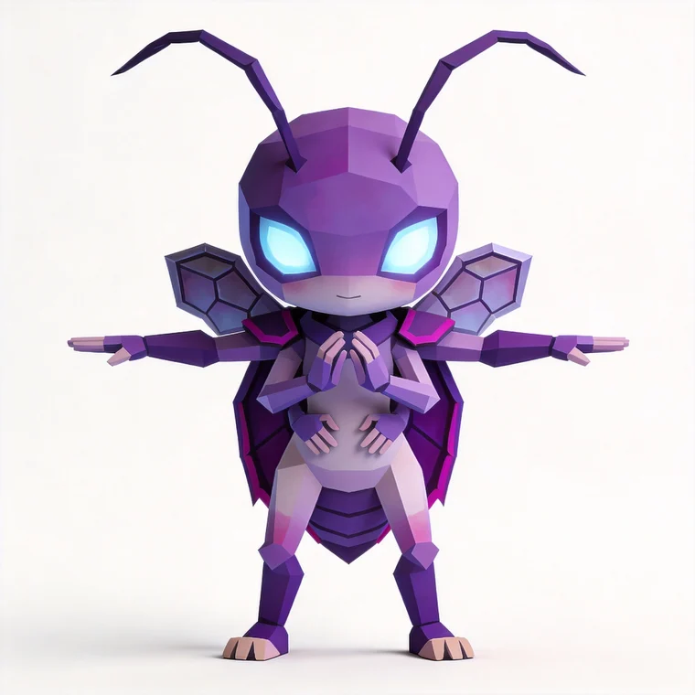
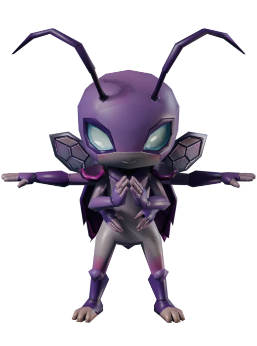
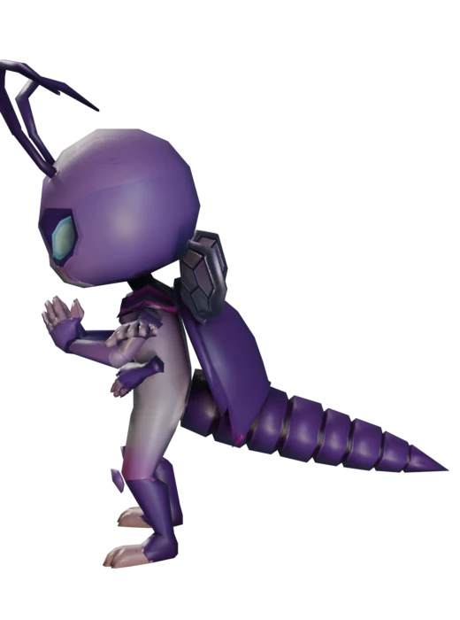
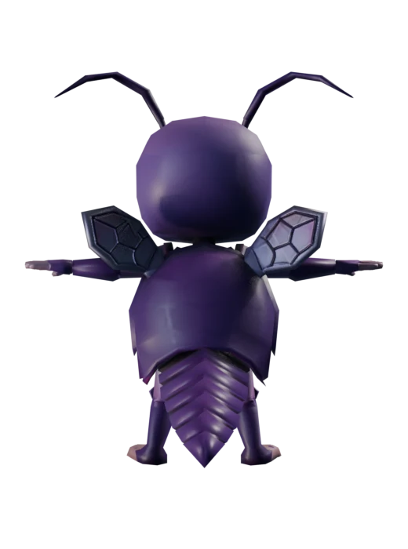
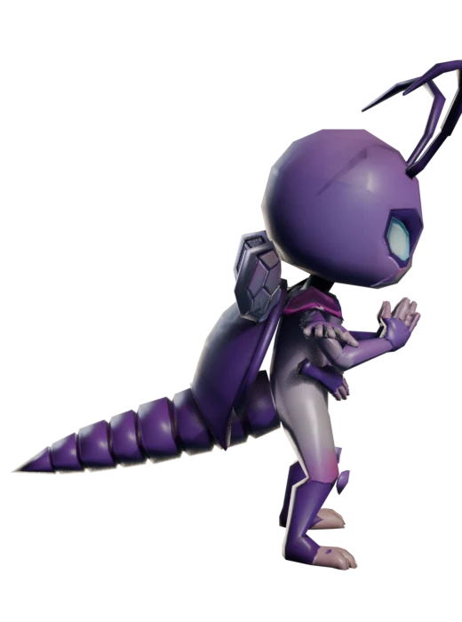
Swept antenna horns, hexagonal chitin plates on the shoulders, and two pairs of clawed hands folded up against the chest, again in the free configuration. The most genuinely alien of the five: it is not a small person with horns, it is something with the wrong number of everything. The purple carapace reads well and the eyes are the right cold blue.
It reads insect before it reads demon, which pulls against the mob's declared
demon family and against the lore, where these things come out of a
dreaming world rather than a hive. The antennae are thin enough to disappear at
gameplay distance, taking the horn read with them.
Horns as the whole design
3,770 tris · 1 material
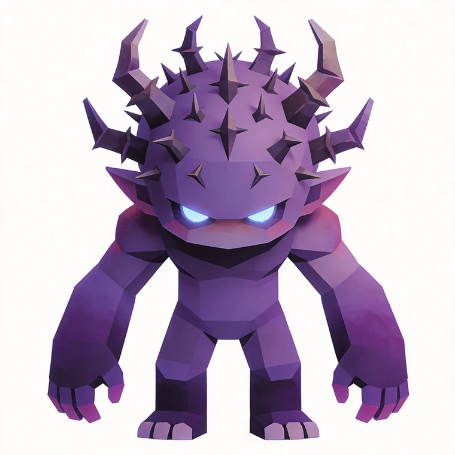
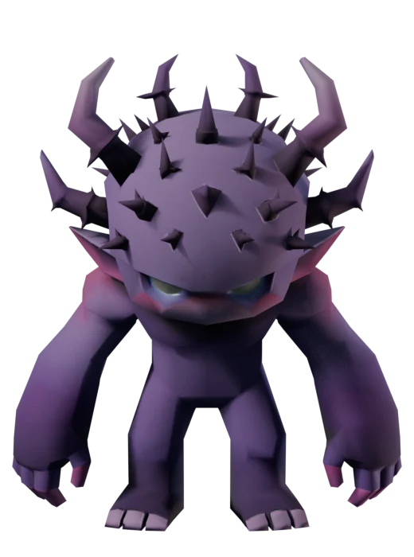
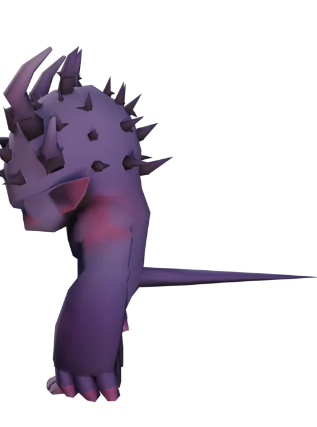
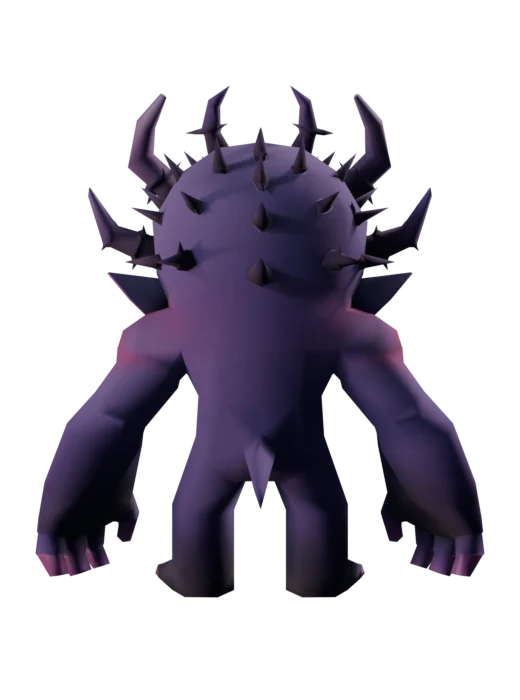
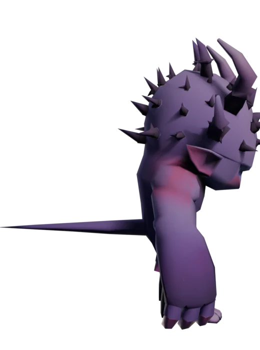
If horns are the thing you like, this is the horn design: a domed skull studded with uneven spikes radiating in every direction, with the face sunk underneath them. Long heavy arms hanging to the ground and a hunched stance give it genuine weight, and it is the only one of the ten that looks like it could actually hurt the militia line.
It has no extra limbs, and the eyes came out sickly green instead of the cold blue every other break-spawned thing burns, so it breaks the family mark. Mostly though it is the wrong tier: this reads as a boss or a rare, not as the thing you kill twelve of in the opening quest. Worth keeping for later.
Most limbs, least threat
3,619 tris · 1 material
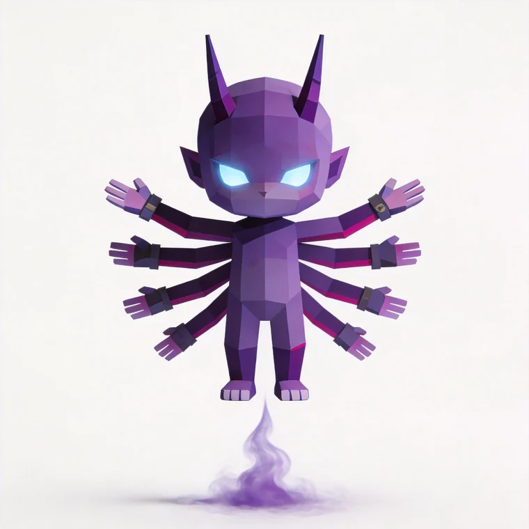
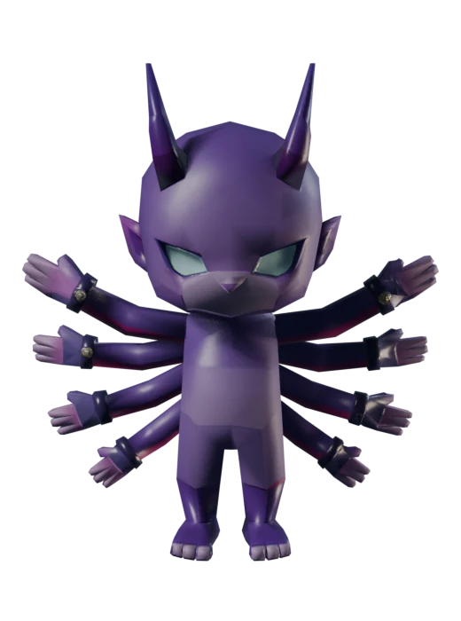
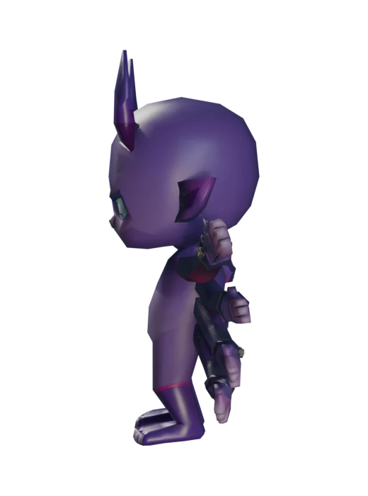
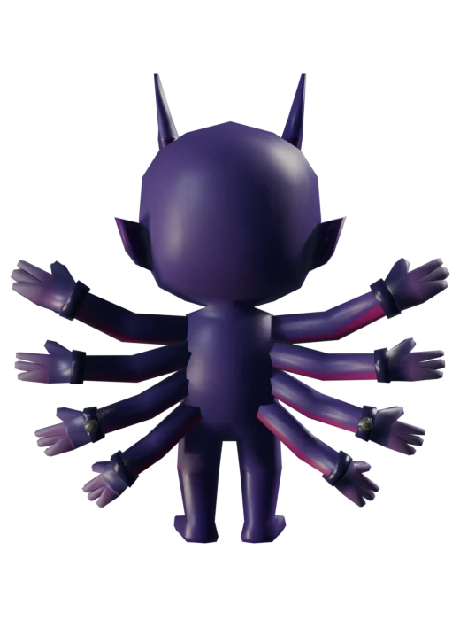
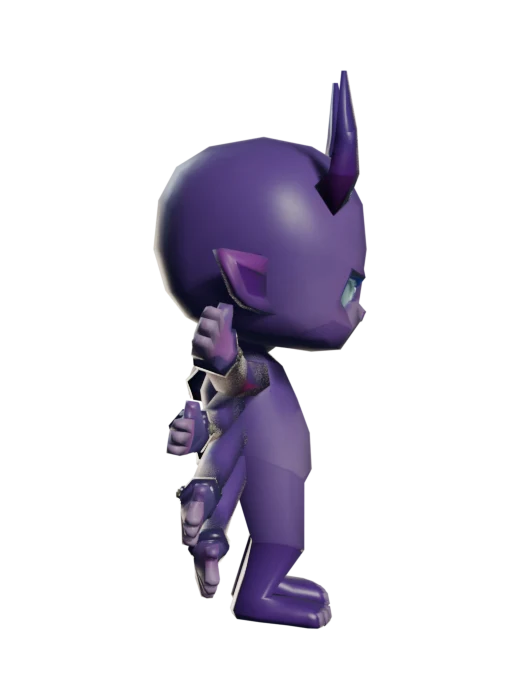
Six arms fanned down its sides is the boldest limb statement of the batch, and it reads clearly from every angle. If "multiple limbs" is the idea you care most about, this is the purest expression of it.
I asked for no legs at all, with the lower body tapering to a wisp of smoke so it floated. The generator ignored that completely and gave it ordinary legs, so the idea that made it interesting is missing. What is left is a cat-faced imp with a lot of arms, and it is the cutest of the ten by a distance, which for this mob is the wrong direction.
Ten candidates, and what finishing one takes
The obvious next step would be Tripo's own rig plus animation retarget, about $1.05 for a
small preset clip set. There is a better option that costs nothing. The pipeline ships a
rig-manual lane that fits a generated mesh onto the actual KayKit skeleton
locally and computes the skin weights on this machine. The model then inherits the
reference body's entire clip library natively: all 22 KayKit animations, including the
Block and strafe clips Tripo's preset library cannot supply at any price.
That matters for style, not just money. Every figure already in the concept book moves on those exact clips, so the Riftspawn would animate identically to Ewald and Marsh rather than merely looking similar while moving differently. Both requirements are met by all five candidates: they are T-posed, and they are humanoid enough in proportion.
These are not mutually exclusive. The campaign needs several break-spawned bodies, and the review notes are explicit that its two commonest enemies must not share a silhouette. The imp and the antler stalker are about as far apart as two purple horned things can be, so shipping the imp as the Riftspawn and the stalker as its sibling the Breach Wretch would solve two problems with one batch. The horn thicket would then sit nicely as something rarer and heavier.
VisualDef, the MOB_KEYS entry, the real
world height, then a screenshot of it standing on the militia line in the running
game.If none of these is right either, another five is $2.75 and about twelve minutes. Naming the parts you like from across the ten is the fastest way to get there; that is what turned round one into round two.
Kept for reference
$2.75 · five candidates
These leaned on "architectural fragments as body parts", which came from
docs/design/last-bell-cast-review-notes.md section 4.4, not from the brief.
Three of the five were also hooded shrouds, and the palette instruction I wrote produced
near-black bodies rather than purple. Recorded here so the reasoning is not lost, and
because the sleeper's four folded arms are what led to this round.
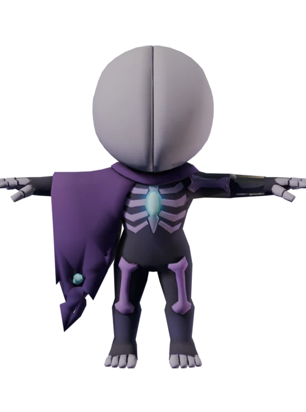
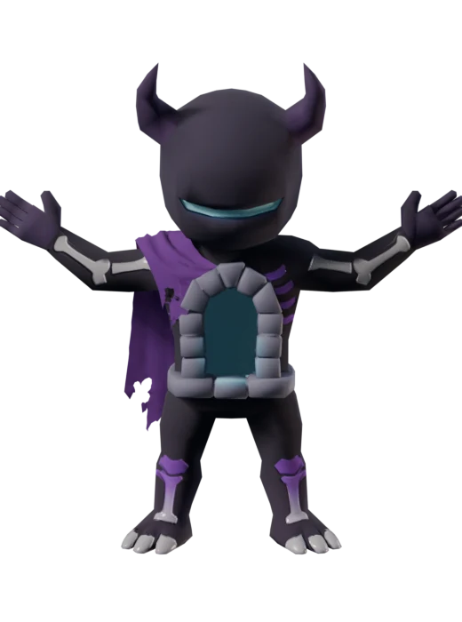
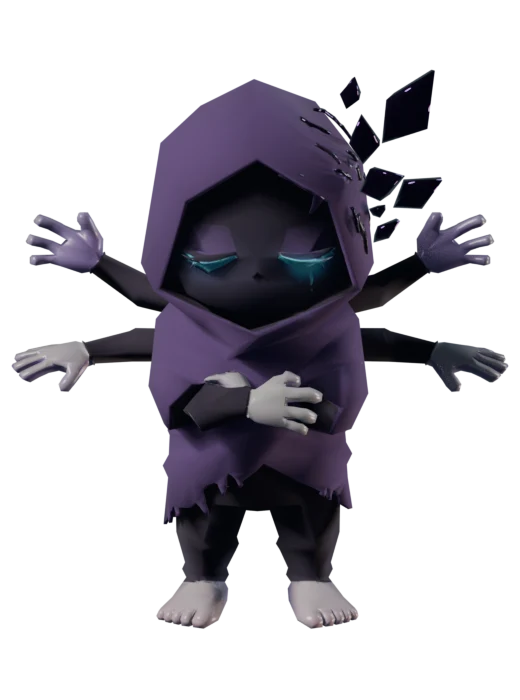
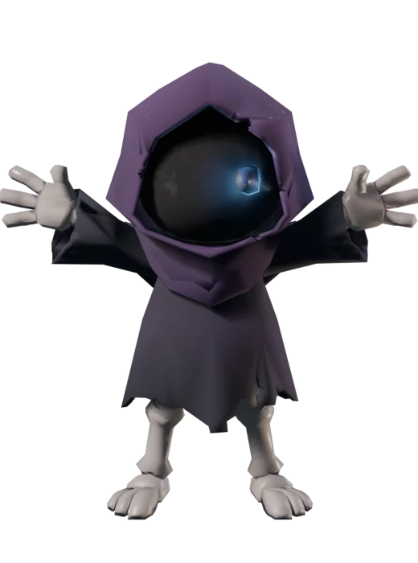
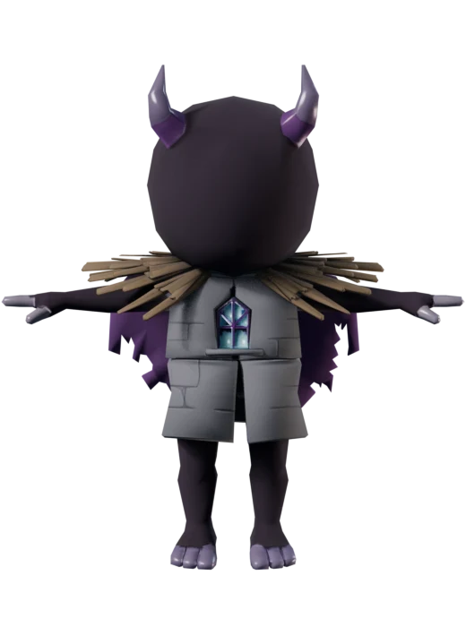